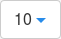

Administration Guide
- About This Guide
- I Cluster Management
- II Operating a Cluster
- III Accessing Cluster Data
- IV Managing Cluster with GUI Tools
- V Integration with Virtualization Tools
- VI FAQs, Tips and Troubleshooting
- Glossary
- A DeepSea Stage 1 Custom Example
- B Default Alerts for SUSE Enterprise Storage
- C Example Procedure of Manual Ceph Installation
- D Documentation Updates
17 openATTIC #Edit source
- File Name: admin_gui_oa.xml
- ID: ceph-oa
Tip: Calamari Removed
Calamari used to be the preferred Web UI application for managing and monitoring the Ceph cluster. Since SUSE Enterprise Storage 5.5, Calamari has been removed in favor of the more advanced openATTIC.
openATTIC is a central storage management system which supports Ceph storage cluster. With openATTIC, you can control everything from a central management interface. It is no longer necessary to be familiar with the inner workings of the Ceph storage tools. Cluster management tasks can be carried out either by using openATTIC's intuitive Web interface, or via its REST API.
17.1 openATTIC Deployment and Configuration #Edit source
- File Name: admin_gui_oa.xml
- ID: ceph-oa-installation
This section introduces steps to deploy and configure openATTIC and its supported features so that you can administer your Ceph cluster using a user-friendly Web interface.
17.1.1 Enabling Secure Access to openATTIC using SSL #Edit source
- File Name: admin_gui_oa.xml
- ID: oa-ssl
Access to the openATTIC Web application uses non-secure HTTP protocol by default. To enable secure access to openATTIC, you need to configure the Apache Web server manually:
If you do not have an SSL certificate signed by a well known certificate authority (CA), create a self-signed SSL certificate and copy its files to the directory where the Web server expects it, for example:
root #openssl req -newkey rsa:2048 -new -nodes -x509 -days 3650 \ -keyout key.pem -out cert.pemroot #cp cert.pem /etc/ssl/certs/servercert.pemroot #cp key.pem /etc/ssl/certs/serverkey.pemRefer to https://documentation.suse.com/sles/12-SP5/single-html/SLES-admin/#sec-apache2-ssl for more details on creating SSL certificates.
Add 'SSL' to the
APACHE_SERVER_FLAGSoption in the/etc/sysconfig/apache2configuration file. You can do it manually, or run the following commands:root #a2enmod sslroot #a2enflag SSLCreate
/etc/apache2/vhosts.d/vhost-ssl.conffor a new Apache virtual host with the following content:<IfDefine SSL> <IfDefine !NOSSL> <VirtualHost *:80> ServerName OA_HOST_NAME Redirect "/" "https://OA_HOST_NAME/" </VirtualHost> <VirtualHost _default_:443> ServerName OA_HOST_NAME DocumentRoot "/srv/www/htdocs" ErrorLog /var/log/apache2/error_log TransferLog /var/log/apache2/access_log SSLEngine on SSLCertificateFile /etc/ssl/certs/servercert.pem SSLCertificateKeyFile /etc/ssl/certs/serverkey.pem CustomLog /var/log/apache2/ssl_request_log ssl_combined </VirtualHost> </IfDefine> </IfDefine>
Restart the Web server to reload the new virtual host definition together with the certificate files:
root #systemctl restart apache2.service
17.1.2 Deploying openATTIC #Edit source
- File Name: admin_gui_oa.xml
- ID: oa-deploy
Since SUSE Enterprise Storage 5.5, openATTIC has been deployed as a DeepSea role. Refer to Chapter 1, Salt Cluster Administration for a general procedure.
17.1.3 openATTIC Initial Setup #Edit source
- File Name: admin_gui_oa.xml
- ID: ceph-oa-install-oa
By default, oaconfig creates an administrative user
account, openattic, with the same password as the
user name. As a security precaution, we strongly recommend changing this
password immediately:
cephadm > oaconfig changepassword openattic
Changing password for user 'openattic'
Password: <enter password>
Password (again): <re-enter password>
Password changed successfully for user 'openattic'17.1.4 DeepSea Integration in openATTIC #Edit source
- File Name: admin_gui_oa.xml
- ID: oa-ds
Some openATTIC features, such as iSCSI Gateway and Object Gateway management, make use of the
DeepSea REST API. It is enabled and configured by default. If you need to
override its default settings for debugging purposes, edit
/etc/sysconfig/openattic and add or change the
following lines:
SALT_API_HOST="salt_api_host" SALT_API_PORT=8001 SALT_API_USERNAME="example_user" SALT_API_PASSWORD="password"
Important: oaconfig restart
Remember to run oaconfig restart after you make changes
to the /etc/sysconfig/openattic file.
Important: File Syntax
/etc/sysconfig/openattic is used in Python as well as
Bash. Therefore, the files need to be in a format which Bash can
understand, and it is not possible to have spaces before or after the
'equals' signs.
17.1.5 Object Gateway Management #Edit source
- File Name: admin_gui_oa.xml
- ID: oa-rgw
Object Gateway management features in openATTIC are enabled by default. If you need to
override the default values for Object Gateway API as discovered from DeepSea,
include the following options with relevant values in
/etc/sysconfig/openattic. For example:
RGW_API_HOST="rgw_api_host" RGW_API_PORT=80 RGW_API_SCHEME="http" RGW_API_ACCESS_KEY="VFEG733GBY0DJCIV6NK0" RGW_API_SECRET_KEY="lJzPbZYZTv8FzmJS5eiiZPHxlT2LMGOMW8ZAeOAq"
Note: Default Resource for Object Gateway
If your Object Gateway admin resource is not configured to use the default value
'admin' as used in 'http://rgw_host:80/admin', you need to also set the
RGW_API_ADMIN_RESOURCE option appropriately.
To obtain Object Gateway credentials, use the radosgw-admin
command:
cephadm > radosgw-admin user info --uid=admin17.1.6 iSCSI Gateway Management #Edit source
- File Name: admin_gui_oa.xml
- ID: oa-igw
iSCSI Gateway management features in openATTIC are enabled by default. If you need
override the default Salt API host name, change the
SALT_API_HOST value as described in
Section 17.1.4, “DeepSea Integration in openATTIC”.
17.2 openATTIC Web User Interface #Edit source
- File Name: admin_gui_oa.xml
- ID: ceph-oa-install-webui
openATTIC can be managed using a Web user interface. Open a Web browser and navigate to http://SERVER_HOST/openattic. To log in, use the default user name openattic and the corresponding password.
Figure 17.1: openATTIC Login Screen #
The openATTIC user interface is graphically divided into a top menu pane and a content pane.
The right part of the top pane includes a link to the current user settings, and a link, and links to the list of existing and system . The rest of the top pane includes the main openATTIC menu.
The content pane changes depending on which item menu is activated. By default, a is displayed showing a number widgets to inform you about the status of the cluster.
Figure 17.2: openATTIC Dashboard #
17.3 Dashboard #Edit source
- File Name: admin_gui_oa.xml
- ID: ceph-oa-webui-dash
Each widget shows specific status information related to the running Ceph cluster. After clicking the title of a widget, the widget spreads across the whole content pane, possibly showing more details. A list of several widgets follows:
The widget tells whether the cluster is operating correctly. In case a problem is detected, you can view the detailed error message by clicking the subtitle inside the widget.
The , , , , , , and widgets simply show the related numbers.
Figure 17.3: Basic Widgets #
The following widgets deal with total and available storage capacity: , , , and .
Figure 17.4: Capacity Widgets #
The following widgets deal with OSD and monitor node latency: , , and :
Figure 17.5: Latency Widgets #
The widget shows the read and write per second statistics in time.
Figure 17.6: Throughput #
Tip: More Details on Mouse Over
If you move the mouse pointer over any of the displayed charts, you will be shown more details related to the date and time pointed at in a pop-up window.
If you click in the chart area and then drag the mouse pointer to the left or right along the time axis, the time interval on the axis will be zoomed in to the interval you marked by moving the mouse. To zoom out back to the original scale, double-click the chart.
Within openATTIC there are options to display graphs for longer than
15 days. However, by default Prometheus only stores history for 15 days.
You can adjust this behavior in /etc/systemd/system/multi-user.target.wants/prometheus.service.
Open
/etc/systemd/system/multi-user.target.wants/prometheus.service.This file should reference the following:
EnvironmentFile=-/etc/sysconfig/prometheus ExecStart=/usr/bin/prometheus $ARGSIf not does not, add the above two lines and include the following:
ARGS="--storage.tsdb.retention=90d" \ --log.level=warn"
Tip
Ensure
ARGSis a multiline bash string. This enables Prometheus to store up to 90 days of data.If you want other time options, the format is as follows: number X time multiplier (where time multiplier can be h[ours], d[ays], w[eeks], y[ears]).
Restart the Prometheus service.
17.4 Ceph Related Tasks #Edit source
- File Name: admin_gui_oa.xml
- ID: ceph-oa-webui-ceph
openATTIC's main menu lists Ceph related tasks. Currently, the following tasks are relevant: , , , , , , , and .
17.4.1 Common Web UI Features #Edit source
- File Name: admin_gui_oa.xml
- ID:
In openATTIC, you often work with lists—for example, lists of pools, OSD nodes, or RBD devices. The following common widgets help you manage or adjust these list:
Click to refresh the list of items.
Click to display or hide individual table columns.
Click 
Click inside and filter the rows by typing the string to search for.
Use to change the currently displayed page if the list spans across multiple pages.
17.4.2 Listing OSD Nodes #Edit source
- File Name: admin_gui_oa.xml
- ID:
To list all available OSD nodes, click from the main menu.
The list shows each OSD's name, host name, status, weight, and storage back-end.
Figure 17.7: List of OSD nodes #
17.4.3 Managing RADOS Block Devices (RBDs) #Edit source
- File Name: admin_gui_oa.xml
- ID: oa-rbds
To list all available RADOS Block Devices, click from the main menu.
The list shows each device's name, the related pool name, size of the device, and, if 'fast-diff' was enabled during the RADOS Block Device creation, the percentage that is already occupied.
Figure 17.8: List of RBDs #
17.4.3.1 Status Information #Edit source
- File Name: admin_gui_oa.xml
- ID:
To view more detailed information about a device, activate its check box in the very left column:
Figure 17.9: RBD Details #
17.4.3.2 Statistics #Edit source
- File Name: admin_gui_oa.xml
- ID:
Click the tab of an RADOS Block Device to view the statistics of transferred data. You can zoom in and out the time range either by highlighting the time range with a mouse, or by selecting it after clicking the date in the top left corner of the tab.
17.4.3.3 RADOS Block Device Snapshots #Edit source
- File Name: admin_gui_oa.xml
- ID:
To create an RADOS Block Device snapshot, click its tab and select from the left top drop-down box.
After selecting a snapshot, you can rename, protect, clone, or delete it. Deletion also works if you select multiple snapshots. restores the device's state from the current snapshot.
Figure 17.10: RBD Snapshots #
17.4.3.4 Deleting RBDs #Edit source
- File Name: admin_gui_oa.xml
- ID:
To delete a device or a group of devices, activate their check boxes in the very left column and click in the top-left of the RBDs table:
Figure 17.11: Deleting RBD #
17.4.3.5 Adding RBDs #Edit source
- File Name: admin_gui_oa.xml
- ID:
To add a new device, click in the top left of the RBDs table and do the following on the screen:
Figure 17.12: Adding a New RBD #
Enter the name of the new device. Refer to Book “Deployment Guide”, Chapter 2 “Hardware Requirements and Recommendations”, Section 2.8 “Naming Limitations” for naming limitations.
Select the cluster that will store the new pool.
Select the pool from which the new RBD device will be created.
Specify the size of the new device. If you click the link above, the maximum pool size is populated.
To fine-tune the device parameters, click and activate or deactivate the displayed options.
Confirm with .
17.4.4 Managing Pools #Edit source
- File Name: admin_gui_oa.xml
- ID:
Tip: More Information on Pools
For more general information about Ceph pools, refer to Chapter 8, Managing Storage Pools. For information specific to erasure coded pools, refer to Chapter 10, Erasure Coded Pools.
To list all available pools, click from the main menu.
The list shows each pool's name, ID, the percentage of used space, the number of placement groups, replica size, type ('replicated' or 'erasure'), erasure code profile, and the CRUSH ruleset.
Figure 17.13: List of Pools #
To view more detailed information about a pool, activate its check box in the very left column:
Figure 17.14: Pool Details #
17.4.4.1 Deleting Pools #Edit source
- File Name: admin_gui_oa.xml
- ID:
To delete a pool or a group of pools, activate their check boxes in the very left column and click in the top left of the pools table:
Figure 17.15: Deleting Pools #
17.4.4.2 Adding Pools #Edit source
- File Name: admin_gui_oa.xml
- ID:
To add a new pool, click in the top left of the pools table and do the following on the screen:
Figure 17.16: Adding a New Pool #
Enter the name of the new pool. Refer to Book “Deployment Guide”, Chapter 2 “Hardware Requirements and Recommendations”, Section 2.8 “Naming Limitations” for naming limitations.
Select the cluster that will store the new pool.
Select the pool type. Pools can be either replicated or erasure coded.
For a replicated pool, specify the replica size and the number of placement groups.
For an erasure code pool, specify the number of placement groups and erasure code profile. You can add your custom profile by clicking the plus '+' sign and specifying the profile name, data and coding chunks, and a ruleset failure domain.
Confirm with .
17.4.5 Listing Nodes #Edit source
- File Name: admin_gui_oa.xml
- ID: ceph-oa-minions
Click from the main menu to view the list of nodes available on the cluster.
Figure 17.17: List of Nodes #
Each node is represented by its host name, public IP address, cluster ID it belongs to, node role (for example, 'admin', 'storage', or 'master'), and key acceptance status.
17.4.6 Managing NFS Ganesha #Edit source
- File Name: admin_gui_oa.xml
- ID: oa-webui-nfs
Tip: More Information on NFS Ganesha
For more general information about NFS Ganesha, refer to Chapter 16, NFS Ganesha: Export Ceph Data via NFS.
To list all available NFS exports, click from the main menu.
The list shows each export's directory, host name, status, type of storage back-end, and access type.
Figure 17.18: List of NFS Exports #
To view more detailed information about an NFS export, activate its check box in the very left column:
Figure 17.19: NFS Export Details #
Tip: NFS Mount Command
At the bottom of the export detailed view, there is a mount command for you to be able to easily mount the related NFS export from a client machine.
17.4.6.1 Adding NFS Exports #Edit source
- File Name: admin_gui_oa.xml
- ID:
To add a new NFS export, click in the top left of the exports table and enter the required information.
Figure 17.20: Adding a New NFS Export #
Select a server host for the NFS export.
Select a storage back-end—either or .
Enter the directory path for the NFS export. If the directory does not exist on the server, it will be created.
Specify other NFS related options, such as supported NFS protocol version, access type, squashing, or transport protocol.
If you need to limit access to specific clients only, click and add their IP addresses together with access type and squashing options.
Confirm with .
17.4.6.2 Cloning and Deleting NFS Exports #Edit source
- File Name: admin_gui_oa.xml
- ID:
To delete an export or a group of exports, activate their check boxes in the very left column and select in the top left of the exports table.
Similarly, you can select to clone the activated gateway.
17.4.6.3 Editing NFS Exports #Edit source
- File Name: admin_gui_oa.xml
- ID:
To edit an existing export, either click its name in the exports table, or activate its check box and click in the top left of the exports table.
You can then adjust all the details of the NFS export.
Figure 17.21: Editing an NFS Export #
17.4.7 Managing iSCSI Gateways #Edit source
- File Name: admin_gui_oa.xml
- ID: oa-webui-iscsi
Tip: More Information on iSCSI Gateways
For more general information about iSCSI Gateways, refer to Book “Deployment Guide”, Chapter 10 “Installation of iSCSI Gateway” and Chapter 14, Ceph iSCSI Gateway.
To list all available gateways, click from the main menu.
The list shows each gateway's target, state, and related portals and RBD images.
Figure 17.22: List of iSCSI Gateways #
To view more detailed information about a gateway, activate its check box in the very left column:
Figure 17.23: Gateway Details #
17.4.7.1 Adding iSCSI Gateways #Edit source
- File Name: admin_gui_oa.xml
- ID:
To add a new iSCSI Gateway, click in the top left of the gateways table and enter the required information.
Figure 17.24: Adding a New iSCSI Gateway #
Enter the target address of the new gateway.
Click and select one or multiple iSCSI portals from the list.
Click and select one or multiple RBD images for the gateway.
If you need to use authentication to access the gateway, activate the check box and enter the credentials. You can find more advanced authentication options after activating and .
Confirm with .
17.4.7.2 Editing iSCSI Gateways #Edit source
- File Name: admin_gui_oa.xml
- ID:
To edit an existing iSCSI Gateway, either click its name in the gateways table, or activate its check box and click in the top left of the gateways table.
You can then modify the iSCSI target, add or delete portals, and add or delete related RBD images. You can also adjust authentication information for the gateway.
17.4.7.3 Cloning and Deleting iSCSI Gateways #Edit source
- File Name: admin_gui_oa.xml
- ID:
To delete a gateway or a group of gateways, activate their check boxes in the very left column and select in the top left of the gateways table.
Similarly, you can select to clone the activated gateway.
17.4.7.4 Starting and Stopping iSCSI Gateways #Edit source
- File Name: admin_gui_oa.xml
- ID:
To start all gateways, select in the top left of the gateways table. To stop all gateways, select .
17.4.8 Viewing the Cluster CRUSH Map #Edit source
- File Name: admin_gui_oa.xml
- ID: ceph-oa-crushmap
Click from the main menu to view cluster CRUSH Map.
Figure 17.25: CRUSH Map #
In the pane, you can see the structure of the cluster as described by the CRUSH Map.
In the pane, you can view individual rulesets after selecting one of them from the drop-down box.
Figure 17.26: Replication rules #
17.4.9 Managing Object Gateway Users and Buckets #Edit source
- File Name: admin_gui_oa.xml
- ID: oa-webui-rgw-users
Tip: More Information on Object Gateways
For more general information about Object Gateways, refer to Chapter 13, Ceph Object Gateway.
To list Object Gateway users, select › from the main menu.
The list shows each user's ID, display name, e-mail address, if the user is suspended, and the maximum number of buckets for the user.
Figure 17.27: List of Object Gateway Users #
17.4.9.1 Adding a New Object Gateway User #Edit source
- File Name: admin_gui_oa.xml
- ID: oa-rgw-user-add
To add a new Object Gateway user, click in the top left of the users' table and enter the relevant information.
Tip: More Information
Find more information about Object Gateway user accounts in Section 13.5.2, “Managing S3 and Swift Accounts”.
Figure 17.28: Adding a New Object Gateway User #
Enter the user name, full name, and optionally an e-mail address and the maximum number of buckets for the user.
If the user should be initially suspended, activate the check box.
Specify the access and secret keys for the S3 authentication. If you want openATTIC to generate the keys for you, activate .
In the section, set quota limits for the current user.
Check to activate the user quota limits. You can either specify the of the disk space the user can use within the cluster, or check for no size limit.
Similarly, specify that the user can store on the cluster storage, or if the user may store any number of objects.
Figure 17.29: User quota #
In the section, set the bucket quota limits for the current user.
Figure 17.30: Bucket Quota #
Confirm with .
17.4.9.2 Deleting Object Gateway Users #Edit source
- File Name: admin_gui_oa.xml
- ID:
To delete one or more Object Gateway users, activate their check boxes in the very left column and select in the top left of the users table.
17.4.9.3 Editing Object Gateway Users #Edit source
- File Name: admin_gui_oa.xml
- ID: oa-user-edit
To edit the user information of an Object Gateway user, either activate their check box in the very left column and select in the top left of the users table, or click their ID. You can change the information you entered when adding the user in Section 17.4.9.1, “Adding a New Object Gateway User”, plus the following additional information:
- Subusers
Add, remove, or edit subusers of the currently edited user.
Figure 17.31: Adding a Subuser #
- Keys
Add, remove, or view access and secret keys of the currently edited user.
You can add S3 keys for the currently edited user, or view Swift keys for their subusers.
Figure 17.32: View S3 keys #
- Capabilities
Add or remove user's capabilities. The capabilities apply to , , , , and . Each capability value can be one of 'read', 'write', or '*' for read and write privilege.
Figure 17.33: Capabilities #
17.4.9.4 Listing Buckets for Object Gateway Users #Edit source
- File Name: admin_gui_oa.xml
- ID: oa-ogw-bucket-list
Tip
A bucket is a mechanism for storing data objects. A user account may have many buckets, but bucket names must be unique. Although the term 'bucket' is normally used within the Amazon S3 API, the term 'container' is used in the OpenStack Swift API context.
Click › to list all available Object Gateway buckets.
Figure 17.34: Object Gateway Buckets #
17.4.9.5 Adding Buckets for Object Gateway Users #Edit source
- File Name: admin_gui_oa.xml
- ID: oa-ogw-bucket-add
To add a new bucket, click in the top left of the buckets table and enter the new bucket name and the related Object Gateway user. Confirm with .
Figure 17.35: Adding a New Bucket #
17.4.9.6 Viewing Bucket Details #Edit source
- File Name: admin_gui_oa.xml
- ID: oa-ogw-bucket-view
To view detailed information about an Object Gateway bucket, activate its check box in the very left column of the buckets table.
Figure 17.36: Bucket Details #
17.4.9.7 Editing Buckets #Edit source
- File Name: admin_gui_oa.xml
- ID: oa-ogw-bucket-edit
To edit a bucket, either activate its check box in the very left column and select in the top left of the buckets table, or click its name.
Figure 17.37: Editing an Object Gateway Bucket #
On the edit screen, you can change the user to which the bucket belongs.
17.4.9.8 Deleting Buckets #Edit source
- File Name: admin_gui_oa.xml
- ID: oa-ogw-bucket-delete
To delete one or more Object Gateway buckets, activate their check boxes in the very left column of the buckets table, and select in the top left of the table.
Figure 17.38: Deleting Buckets #
To confirm the deletion, type 'yes' in the pop-up window, and click .
Warning: Careful Deletion
When deleting an Object Gateway bucket, it is currently not verified if the bucket is actually in use, for example by NFS Ganesha via the S3 storage back-end.